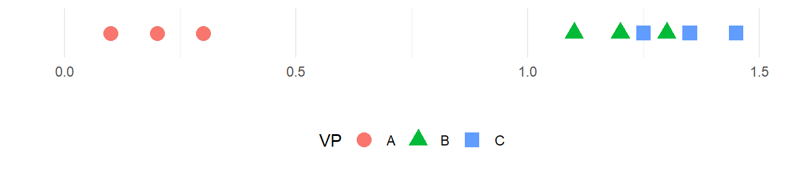

24 Messfehler und Reliabilität
Diese Kapitel beschäftigt sich mit der Güte von Messinstrumenten. Trotzdem eigentlich ein zentrales Thema bei der Erhebung von Messdaten wird diese Thema in den vielen Fällen gar nicht oder nur unzureichend betrachtet.
24.1 Genauigkeit versus Präzision
Die ersten beiden wichtigen Eigenschaften eines Messinstruments sind die Genauigkeit und die Präzision. Beide sind Eigenschaften sind zentrale zur Beurteilung der Qualität eines Messinstruments. Genauigkeit beschreibt, wie nahe eine Messung am tatsächlichen oder wahren Wert liegt. Ein Messinstrument mit hoher Genauigkeit liefert Werte, die nur eine geringe Abweichung vom realen Wert aufweisen. Die mittlere Abweichung vom tatsächlichen Wert wird auch als bias bezeichnet. Präzision hingegen bezieht sich auf die Wiederholbarkeit von Messungen. Ein präzises Instrument liefert bei mehrfacher Messung ähnliche oder identische Werte, unabhängig davon, ob diese dem wahren Wert nahekommen. Die Streuung wird auch oft als Rauschen (engl. noise) bezeichnet. Ein Messinstrument kann also präzise, aber ungenau sein, wenn die Werte zwar eng beieinanderliegen, jedoch systematisch vom tatsächlichen Wert abweichen. Idealerweise sollte ein Messinstrument sowohl genau als auch präzise sein, um verlässliche Ergebnisse zu liefern (siehe auch Luchette und Akhondi-Asl 2024).
In Abbildung 24.1 sind Präzision und Genauigkeit anhand einer Zielscheibe noch einmal verdeutlicht.
Bevor eine Messung durchgeführt werden soll, ist es daher notwendig über die Genauigkeit und die Präzision eines Messgeräts Bescheid zu wissen. In manchen Fällen kann beispielsweise eine geringere Genauigkeit eines Messgeräts weniger problematisch sein als eine geringere Präzision. Wenn zum Beispiel nur Unterschiede gemessen werden sollen, dann ist in bestimmten Fällen die absolute Genauigkeit weniger von Bedeutung da die Abweichungen vom realen Wert durch den Vergleich subtrahiert werden. Wird zum Beispiel eine Waage verwendet um die Veränderungen im Gewicht an Untersuchungspersonen über die Zeit verglichen werden sollen. Die Waage sei aber nicht korrekt geeicht und zeigt immer \(2\) kg zu viel an. Dadurch ist der absolute, angezeigte Wert verfälscht. Werden aber die beobachteten Gewichte über die Messzeitpunkte voneinander abgezogen, dann ist der Unterschied zwischen den Messzeitpunkten dennoch korrekt. Die Annahme dabei ist allerdings, dass sich die Genauigkeit über den Beobachtungszeitung nicht verändert. Die Eigenschaften des Messinstruments können anhand zweier Eigenschaften bestimmt werden. Dies sind der Messfehler und die Reliabilität.
24.2 Übereinstimmung versus Reliabilität
Ein Problem in der Literatur ist, dass die Eigenschaften von Messinstrumenten in verschiedenen Disziplinen entwickelt wurden und dadurch Überschneidungen in der Verwendung der Terminologie auftreten (H. C. de Vet u. a. 2006).
Die erste Frage die sich bei der Behandlung von Messinstrumenten stellt ist die Frage ob ein gegebenes Instrument bezüglich der Übereinstimmung (engl. agreement) oder bezüglich der Reliabilität (engl. reliability) untersucht werden soll (Kottner und Streiner 2011; H. C. de Vet u. a. 2006). Unter agreement stellt sich die Frage: Wie nahe beieinander sind wiederholte Messungen am gleichen Objekt? Im Gegensatz dazu beschäftigt sich die Reliabilität mit der Frage: Wie gut können Objekte voneinander unterschieden werden.
In Abbildung 24.2 ist ein schematischer Datensatz abgebildet an dem der Unterschied zwischen agreement und reliability veranschaulicht werden kann.

Es wurden drei Personen dreimal gemessen. Zwischen den Personen sind Unterschiede bezüglich der Messwerte zu erkennen aber auch innerhalb einer Person sind Schwankungen zu sehen. Die Übereinstimmung (agreement) der Messung wird durch die Schwankung innerhalb einer Person beschrieben. Dies ist der Messfehler des Instruments. Dagegen beschreibt die Reliabilität das Verhältnis der Schwankung innerhalb einer Person zur Schwankung zwischen den Personen. D.h. die Reliabilität beschreibt wie gut das Messinstrument zwischen den Personen diskriminieren kann (Stratford und Goldsmith 1997).
Die Diskriminierungsfähigkeit ist daher abhängig davon wie groß die Streuung zwischen den Personen ist. Beispielsweise ist das Messinstrument sehr gut zwischen den Versuchspersonen A und B bzw. A und C zu unterscheiden. Dies ist dagegen für den Unterschied zwischen den Personen B und C nicht der Fall, da die Streuung der Messwerte innerhalb einer Person in der Größenordnung liegen der Unterschiede zwischen den beiden Personen.
Bei der Beurteilung eines Messinstruments sollten daher beide Komponenten: die Reliabilität und die Übereinstimmung berücksichtigt werden (Berchtold 2016). Unglücklicherweise wird diese Terminologie nicht immer benutzt, sondern es gibt auch die Unterscheidung in absolute und relative Reliabilität, wobei die absolute Reliabilität die Übereinstimmung (agreement) bezeichnet und die relative Reliabilität die Reliabilität im eigentlichen Sinne bezeichnet (Baumgartner 1989). Leider wird diese Einteilung in der Literatur nicht immer eingehalten. Im folgenden wird zunächst die Reliabilität untersucht.
24.3 Reliabilität
Um die Herleitung der Reliabilität zu veranschaulichen wird ein konkretes Beispiel betrachtet. In Tabelle 24.1 ist dazu ein Ausschnitt von EMG-Daten aus Liljequist, Elfving, und Skavberg Roaldsen (2019) abgetragen.
| Subject | Day 1 | Day 2 | Day 3 |
|---|---|---|---|
| 1 | 59.9 | 67.7 | 72.2 |
| 2 | 62.9 | 66.5 | 67.9 |
| 3 | 58.9 | 50.1 | 47.9 |
| 4 | 46.8 | 50.0 | 53.9 |
| 5 | 62.5 | 67.8 | 62.6 |
| 6 | 44.8 | 42.7 | 48.4 |
Insgesamt wurde bei \(N = 10\) Personen die Muskelaktivierung in der Rückenmuskulatur über drei Tage jeweils an der gleichen Stelle gemessen. Ziel war eine Abschätzung zu erhalten, wie stabil bzw. ähnlich die EMG-Messungen über die verschiedenen Tage sind. In Abbildung 24.3 sind die Daten noch einmal graphisch dargestellt.
Wie in Abbildung 24.3 zu sehen ist, schwanken die Werte über die drei Messzeitpunkte. Einmal sind innerhalb der Personen Unterschiede zu erkennen, aber auch die Mittelwerte für die Messtage über die zehn Personen hinweg verändern sich über die Messzeitpunkte. D.h. die gewählte Messmethodik weist selbst Schwankungen auf. Die Größe der Schwankungen müssen bei der Erstellung eines Untersuchungsdesigns berücksichtigt werden. Sollen beispielsweise Unterschiede zwischen zwei Gruppen mit Hilfe dieser Messmethodik untersucht werden, aber wenn sich die zu erwartenden Unterschiede zwischen den Gruppen in der Größenordnung der Schwankungen oder möglicherweise sogar darunter, dann wird es sehr schwierig bis unmöglich werden diese Unterschiede in einem Experiment nachweisen zu können.
Um den Begriff der Reliabilität klar zu definieren, ist die Erstellung eines theoretischen Modells erforderlich. Soll ein Wert bestimmt werden, der die Eigenschaft eines Objekts beschreibt, dann ist eine plausible Annahme das es einen wahren Wert gibt. Zum Beispiel ist direkt einsichtig, dass ein gegebener Holzstab eine bestimmte Länge hat. Oder eine Hantelscheibe hat ein bestimmtes Gewicht. Solange keine Manipulation an der Scheibe durchgeführt wird, sollte sich dieses Gewicht nicht ändern. Dieser Wert soll nun als true-score bezeichnet werden und der true-score erhält das Zeichen \(\tau\). Während \(\tau\) für eine Hantelscheibe noch relativ direkt einsichtig ist, ist dies nicht mehr ganz so einfach sobald biologische Objekte ins Spiel kommen. Soll beispielsweise die Körpergröße einer Person bestimmt werden, dann ist klar das die Körpergröße keine feststehende Größe ist, sondern im Verlauf eines Tages einer Schwankung unterliegt (Tyrrell, Reilly, und Troup 1985). In Abbildung 24.4 ist beispielsweise die Veränderung der Körperhöhe im Verlauf eines Tages abgetragen.

Es soll nun aber davon ausgegangen werden, dass der wahre Wert \(\tau\) wohldefiniert ist. Dann besteht aber nach wie vor das Problem, selbst bei der Hantelscheibe, dass dieser Wert mit Hilfe eines Messmethodik bestimmt werden muss. Zum Beispiel im Fall der Hantelscheibe muss eine Waage verändert werden um das Gewicht zu bestimmen. Diese Waage ist aber selbst unweigerlich mit Messfehlern behaftet. Vielleicht ist bei der Eichung was schief gegangen, vielleicht ist die Feder mit Zeit ausgeleiert, oder die Umgebungstemperatur entspricht nicht den Vorgaben usw. und sofort. Das führt dazu, dass der gemessene Wert nicht gleich dem wahren Wert \(\tau\) entspricht. Um den gemessenen Wert vom wahren Wert zu unterscheiden wird ein weiteres Symbol \(Y\) verwendet. \(Y\) ist dementsprechend der beobachtete Wert. Die Messfehler werden weiterhin mit dem Symbol \(\epsilon\) bezeichnet. Dies führt insgesamt zu folgendem Modell:
\[\begin{equation} Y = \tau + \epsilon \label{eq-ed-reliability-model} \end{equation}\]
D.h. der beobachtete Wert \(Y\) setzt sich zusammen aus dem wahren Wert \(\tau\) und dem Messfehler \(\epsilon\). Der Messfehler geht in diesem Modell additiv in den Wert \(Y\) ein. Eine weitere Annahme soll nun dahin gehend bestehen, dass die Messfehler zufällig sind und bei wiederholter Messung im Mittel gleich \(0\) sind. Formal ist der Erwartungswert \(E[\epsilon_0] = 0\), wie das auch schon im Rahmen der Regression verwendet wurde. Weiterhin besteht kein Zusammenhang zwischen der Größe des Messfehlers und der Größe von \(\tau\). Beispielsweise bei der Messung der Körpergröße verändert sich die Größe des Messfehlers nicht mit der Größer der Probandinnen sondern bleibt konstant. Formal führt dies zu \(\text{Cov}(\epsilon,\tau) = 0\).
Werden nun mehrere bzw. \(N\) Messungen durchgeführt, dann wird entsprechend nicht nur ein wiederholter, konstanter Wert beobachtet sondern eine Menge von Werten. Um diese zu unterscheiden wird entsprechend ein Index \(i\) eingeführt.
\[\begin{equation} Y_i = \tau_i + \epsilon_i, \quad i \in [1,\ldots,N] \end{equation}\]
Um die beiden Komponenten abschätzen zu können ist es daher notwendig, dass von dem zu messenden Objekt mehrere Messungen vorliegen. Wenn mehrere Werte für jedes Objekt zur Verfügung stehen, dann kann für diese beobachteten Wert \(Y_i\) eine Varianz berechnet werden und, zumindest theoretisch, auch eine Varianz für die \(\tau_i\)s abgeschätzt werden. Dies ermöglicht nun auch eine formale Definition der Reliabilität unter dem gegebenen Modell.
Definition 24.1 (Reliabilität - Definition) Die Reliabilität ist definiert als das Verhältnis der Varianz der True-Score-Variablen \(\sigma_{\tau}\) zur Gesamtvarianz der Testvariablen \(\sigma_{Y}\). (Moosbrugger und Kelava 2020, p.282)
\[\begin{equation} \text{Rel} = \frac{\sigma_{\tau}^2}{\sigma_{Y}^2} = \frac{\sigma_{\tau}^2}{\sigma_{\tau}^2+\sigma_{\epsilon}^2} \label{eq-ed-reliability} \end{equation}\]
Der Wertebereich der Reliabilität liegt in \(\text{Rel} \in [0,1]\) wobei eine Wert \(0\) keine Reliabilität anzeigt, während ein Wert von \(\text{Rel} = 1\) auf eine perfekte Reliabilität hindeutet.
Veranschaulicht, wenn der Messfehler gleich Null ist, also \(\sigma_{\epsilon}^2 = 0\) gilt, dann ist \(\text{Rel} = 1\), während wenn der Messfehler sehr groß im Verhältnis zu \(\sigma_{\tau}^2\) ist, dann geht der \(\text{Rel}\) gegen Null. Diese Herleitung unterstreicht noch einmal die Abhängigkeit der Reliabilität von der Varianz der Stichprobe. Für einen gegebenen Messfehler wird die Reliabilität besser wenn die Varianz der Messobjekte \(\sigma_{\tau}^2\) größer wird. Andersherum, für eine gegebene Varianz \(\sigma_{\tau}^2\) zwischen den Objekten wird die Reliabilität größer wenn der Messfehler \(\sigma_{\epsilon}^2\) kleiner wird.
Hinweis
Das Modell das zur Verwendung der Definition für die Reliabilität verwendet wurde mit \(Y = \tau + \epsilon\) folgt der sogenannten klassischen Testtheorie (KTT). Unter der klassischen Testtheorie fließen noch weitere Annahmen in das Modell ein. So sind nicht nur die Messfehler und der wahre Wert unkorreliert \(Cov(\epsilon,\tau)=0\) sondern, die Messfehler sind auch voneinander unabhängig \(Cov(\epsilon_i, \epsilon_j) = 0\) und die Varianzen der Messfehler \(\sigma^2(\epsilon_i)\) bleiben über Wiederholungen konstant, sprich gleich groß. Dies führt dann zu einer Aufteilung der totalen Varianz von \(Y\) in die beiden Komponenten: Varianz der wahren Werte \(\sigma^2(\tau_i)\) und Varianz der Messfehler \(\sigma^2(\epsilon_i)\).
\[\begin{equation} \sigma^2(Y) = \sigma^2(\tau_i) + \sigma^2(\epsilon_i) \label{eq-y-tau-variance} \end{equation}\]
Für die Interpretation der Reliabilität hat sich in der Literatur eine Kategorisierung entlang der Werte in Tabelle 24.2 etabliert, die allerdings auch wieder nur als Orientierungshilfe zu betrachten ist.
| Bereich | Interpretation |
|---|---|
| \(<0.5\) | poor |
| \(0.5-0.75\) | moderate |
| \(0.75-0.9\) | good |
| \(>0.9\) | excellent |
Es gibt unterschiedliche Arten wie die Reliabilität bestimmt werden kann (Baumgartner 1989). Die Test-Retest-Reliabilität beschreibt die Stabilität eines Tests über die Zeit, indem die gleichen Objekte zu unterschiedlichen Zeitpunkten getestet werden. Die Interrater-Reliabilität bezieht sich auf die Übereinstimmung der Bewertungen durch verschiedene Beobachter oder Rater der gleichen Objekte und wird auch als Objektivität im Rahmen der Testgütekriterien bezeichnet. Die Paralleltest-Reliabilität vergleicht die Ergebnisse zweier gleichwertiger Testformen, um die Konsistenz zu überprüfen.
24.3.1 Intraclass correlation coefficient
Ein Maß das in der Literatur zur Bestimmung der Reliabilität sehr oft angewendet wird, ist der Intraklassen-Korrelationskoefficient (intraclass correlation coefficient) ICC. In der Literatur gibt es ein ganze Reihe von unterschiedlichen Arten den ICC zu berechnen. Es werden allerdings in den meisten Fällen einer von drei verschiedene Typen angewendet. ICC(1) basiert auf einem einfachen Modell mit nur einen zufälligen Faktor. Unter diesem Modell wird jede Bewertungseinheit von unterschiedlichen, zufällig ausgewählten Beurteilern bewertet. ICC(1) ist für die Betrachtungen hier nicht weiter von großem Interesse. ICC(2) verwendet ein komplizierteres Modell bei dem alle Beurteiler alle Bewertungsobjekte bewerten. Dabei sind sowohl Beurteiler als auch die Objekte zufällig und werden als Stichproben aus einer größeren Stichprobe angesehen. D.h. die Ergebnisse sind geeignet um über die Beobachtungsobjekte und Bewerter hinaus zu verallgemeinern. ICC(3) nutzt ebenfalls ein Zweiweg-Modell. Unter ICC(3) werden die Beurteiler als feste Objekte betrachtet. Daher kann nicht auf andere Beurteiler generalisiert werden. Der Hauptunterschied zwischen ICC(2) und ICC(3) liegt also in der Annahme, ob die Beurteiler zufällig oder fest sind (McGraw und Wong 1996). Daraus resultiert die folgende Systematik der ICCs (siehe Abbildung 24.5)

Tatsächlich unterscheidet sich die Berechnung unter Modell 2 und Modell 3 nicht voneinander. Beide Modelle gibt es in zwei unterschiedlichen Typen: Konsistenz und Agreement. Die Agreementmodelle modellieren die Varianz zwischen den Bewertern im Gegensatz zu den Konsistenzmodellen bei denen diese Variabilität vernachlässigt wird. Die Bezeichnung agreement ist dabei nicht die Gleiche wie sie oben verwendet wurde, sondern wohl eher eine historischer Unfall. Beide Modelle sind vor Maße für die Reliabilität und nicht für die Übereinstimmung nach der Verwendung, wie nahe wiederholte Werte zusammen liegen.
Um die Modellanahmen der verschiedenen Modell besser nachvollziehen zu können, ist es hilfreich das Datenmodell für die Berechnung des ICC zu konkretisieren (siehe Tabelle 24.3).
| Bewertungsobjekt | Bewerter 1 | Bewerter 2 | \(\cdots\) | Bewerter k |
|---|---|---|---|---|
| 1 | \(x_{11}\) | \(x_{12}\) | \(\cdots\) | \(x_{1k}\) |
| 2 | \(x_{21}\) | \(x_{22}\) | \(\cdots\) | \(x_{2k}\) |
| \(\vdots\) | \(\vdots\) | \(\vdots\) | \(\vdots\) | |
| n | \(x_{n1}\) | \(x_{n2}\) | \(\cdots\) | \(x_{nk}\) $ |
| Mean | \(M_1\) | \(M_2\) | \(\cdots\) | \(M_k\) |
D.h. für jedes Bewertungsobjekt werden mehrere Bewertungen abgegeben. Die Bewerter können dabei auch unterschiedliche Messapparaturen sein und müssen nicht unbedingt Personen sein. Generell ergibt sich eine Aufteilung in \(r\) Zeilen und \(c\) Spalten. Daher kann auch die Streuung entlang dieser beiden Dimensionen ermittelt werden. Eine Streuung zwischen den Bewertern entlang der Zeilen \(\sigma^2_r\) und eine Streuung entlang der Spalten zwischen den Objekten \(\sigma^2_c\). Daraus können die Modelle wie folgt voneinander unterschieden werden (siehe Tabelle 24.4}.
| Bezeichnung | Modell |
|---|---|
| Model 1 | \(x_{ij} = \mu + \underbrace{r_i + e_{ij}}_{\text{zufällig}}\) |
| Model 2 | \(x_{ij} = \mu + \underbrace{r_i + \overbrace{c_j}^{bias} + e_{ij}}_{\text{zufällig}}\) |
| Model 3 | \(x_{ij} = \mu + \underbrace{r_i}_{\text{zufällig}} + \overbrace{c_j}^{\text{fixed}} + \underbrace{e_{ij}}_{\text{zufällig}}\) |
Die Unterschied zwischen den Bewertern wird dabei als Bias bezeichnet. D.h. die Tendenz eines Bewerters eher zu hohe bzw. eher zu niedrige Werte zu geben. Dies Unterschiede können entweder zufällig sein, wenn die Bewerter als Stichprobe aus einer Population von Bewertern angesehen werden, oder als feste Effekte, wenn nur die Unterschiede der beobachteten Bewerter von Bedeutung sind. Daraus resultieren unterschiedliche Arten der Berechnung für den ICC in Abhängigkeit vom gewählten Modell und ob der Einfluss der Streuung zwischen den Bewertern (fälschlich als agreement bezeichnet) oder ohne diesen (consistency) berechnet werden soll.
| Modell | Modell 1 | Modell 2 | Modell 3 |
|---|---|---|---|
| Konsistenz | \(\rho_{1}=\frac{\sigma_r^2}{\sigma_r^2 + \sigma_{\epsilon}^2}\) | \(\rho_{2C} = \frac{\sigma_r^2}{\sigma_r^2 + \sigma_e^2}\) | \(\rho_{3C} = \frac{\sigma_r^2}{\sigma_r^2 + \sigma_e^2}\) |
| Übereinstimmung | \(\rho_{2A} = \frac{\sigma_r^2}{\sigma_r^2+\sigma_c^2 + \sigma_e^2}\) | \(\rho_{3A} = \frac{\sigma_r^2}{\sigma_r^2 + \theta_c^2 + \sigma_e^2}\) |
Je nach Modellannahmen und intendierter Zielgröße ergeben sich somit unterschiedliche Berechnungsarten. Insbesondere sind die ICC \(\rho\)-Werte für die Berechnung der Konsistenz immer mindestens so groß wie diejenigen für die Übereinstimmung, da hier die Varianz \(\sigma_r^2\) zwischen den Bewertern zusätzlich durch den Faktor \(\sigma_c^2\) unter Modell 2 bzw. \(\Theta_c^2\) unter Modell 3 geteilt wird. Für die Dokumentation ist es daher wichtig die Art des berechneten ICCs genau anzugeben bzw. wenn ICCs aus der Literatur interpretiert werden sollen ist die Kenntnis der Berechnungsart zwingend notwendig (Liljequist, Elfving, und Skavberg Roaldsen 2019; Qin u. a. 2019; Koo und Li 2016).
Dazu sei noch einmal betont, dass der ICC ein Reliabilitätsmaß ist und somit von der Streuung in der Stichprobe abhängt und als absolutes Maß schwierig zu interpretieren ist (Müller und Büttner 1994). Die folgende Abbildung veranschaulicht diesen Zusammenhang noch einmal anhand einer einfachen Schematik (siehe Abbildung 24.6).
In Abbildung 24.6 sind sechs verschiedene synthetische Datensätze abgebildet. Die Datensätz sind unterteilt nach zwei verschiedenen \(X\) Mengen und nach drei unterschiedlichen Arten wie die \(Y\) Werte sich von den \(X\) Werten unterscheiden. Für beide \(X\) Mengen ist der ICC unter allen drei Berechnungsmethoden (zwischen Modell 3 und Modell 2 wird hier auf Grund der gleichen Berechnung nicht unterschieden) einen Wert von \(r = 1\) einnehmen. Wenn die \(Y\) Werte gegen \(X\) um eine konstante, im Beispiel \(3\) verschoben sind, ist der Konsistenzwert immer noch \(r = 1\), während der ICC(2,A) ungleich \(1\) ist. Dabei besteht jedoch ein Abhängigkeit von der Streuung der \(X\) Werte. Wenn die Streuung geringer ist (linke Spalte), dann resultiert ein geringerer ICC im Vergleich zu wenn die Streuung der \(X\)-Werte größer ist (rechte Spalte). Der gleiche Effekt ist in der untersten Zeile für \(y = 2x\) zu beobachten, wobei ICC(2,C) nun auch \(<1\) ist. Dies verdeutlicht nochmal, dass der ICC nicht nur eine Funktion der Streuung der Bewerter (Messinstrumete) sondern ebenfalls der Stichprobe ist.
24.3.2 Spearman-Brown prophecy formula
Eine Möglichkeit die Reliabilität eines Test zu verbessern, besteht darin, nicht nur eine einzelne Messung zu nehmen, sondern über mehrer Messungen den Mittelwert zu bestimmen. Beispielweise könnte bei einem Pre-Post Design, anstatt nur jeweils eine einzelne Messung zu den beiden Zeitpunkten mehrere \(K\) Messungen genommen werden. Im Sinne der Terminologie sind diese mehrere Wiederholungen der Messung. Dies führt unter, der Annahme das die Messfehler zufällig mit einem Mittelwert von \(E[\epsilon_i] = 0]\) sind, dazu, dass der der gemittelte Messwert näher am wahren Wert \(\tau_i\) liegt. Der ICC für die gemittelte Testung \(\rho^*\) hängt mit dem ICC für eine einzelne Testung \(\rho\) über die folgende Formel die nach Spearman und Brown benannt ist:
\[\begin{equation} \rho^* = \frac{K \cdot \rho}{1 + (K-1) \cdot \rho} \end{equation}\]
Über diesen Zusammenhang kann einfach abgeschätzt werden zu welcher Verbesserung eine Erhöhung der Messwiederholungen führen würde (Baumgartner 1989). Die Anwendung der Spearman-Brown prophecy Formel erlaubt somit beispielsweise eine Abschätzung über die Anzahl der notwendigen Trials zu treffen bei der Erstellung eines Untersuchungsdesigns. In Abbildung 24.7 ist der Zusammenhang von \(\rho^*\) für verschiedene \(\rho\) und den Zusammenhang mit der Wiederholungszahl abgetragen.
In Abbildung 24.7 ist zu erkennen, dass der Zuwachs der Reliabilität ab einer Wiederholungszahl von \(K > 7\) für die meisten Ausgangsniveau \(\rho\) nur noch sehr gering ist. Insbesondere wenn die Ausgangsreliabilität schlecht ist, dann ist selbst mit einer hohen Anzahl von Wiederholungen kein exzellentes Niveau zu erreichen.
Ursprünglich ist die SB-Formel entwickelt worden um die Anzahl von Items in einem Fragebogen abzuschätzen die das gleiche Messkonstrukt abbilden, daher ist der Übertrag auf alle möglichen Kontexte in den Sportwissenschaft nicht immer gegeben. Beispielsweise scheint es angebracht, bei Performance Messungen wie Sprüngen und Shuttle runs das Ergebnis der SB-Formel eher als eine obere Grenze anzusehen (Baumgartner 1968). Allerdings scheint die Anwendbarkeit besser als allgemein angenommen (Henrica CW de Vet u. a. 2017; Warrens 2017).
24.3.3 Intraclass Correlation in R
In R kann der ICC relativ komfortable über das Package psych berechnet werden, welches die Funktion ICC() zur Verfügung stellt.
icc_hat <- psych::ICC(lil[,-1])
icc_hatCall: psych::ICC(x = lil[, -1])
Intraclass correlation coefficients
type ICC F df1 df2 p lower bound upper bound
Single_raters_absolute ICC1 0.71 8.2 9 20 5e-05 0.39 0.91
Single_random_raters ICC2 0.71 8.7 9 18 6e-05 0.39 0.91
Single_fixed_raters ICC3 0.72 8.7 9 18 6e-05 0.40 0.91
Average_raters_absolute ICC1k 0.88 8.2 9 20 5e-05 0.65 0.97
Average_random_raters ICC2k 0.88 8.7 9 18 6e-05 0.66 0.97
Average_fixed_raters ICC3k 0.89 8.7 9 18 6e-05 0.66 0.97
Number of subjects = 10 Number of Judges = 3
See the help file for a discussion of the other 4 McGraw and Wong estimates,24.4 Messfehler (Agreement)
Im Folgenden werden verschiedene Maße für den Messfehler vorgestellt. Leider gibt es hier auch überschneidende Terminologie in der Literatur, die zum Teil auch in unterschiedlichen Berechnungsmethoden resultiert.
24.4.1 Standard Error of Measurement
In Abschnitt zur Reliabilität wurde anhand des KTT der Messfehler \(\epsilon_i\) eingeführt. Die Varianz der Messfehler \(\sigma^2(\epsilon_i)\) die zur Berechnung der Reliabilität verwendet wird, charakterisiert auch schon alleine für sich genommen auch schon ein wichtiges Merkmal des Messinstruments. Die Wurzel dieser Varianz wir als der Standardfehler des Messwerts (SEM) bezeichnet. Der SEM ist ein Maß dafür, wie stark die Ergebnisse wiederholter Messungen voneinander abweichen. Sei zum Beispiel der Sprunghöhe einer Athletin 20-mal hintereinander gemessen worden, dann schätzt die Standardabweichung dieser Messwerte den SEM ab (Patterson 1955).
\[\begin{equation*} SEM = \sqrt{\sigma^2(\epsilon_i)} \end{equation*}\]
Der Vorteil des SEM besteht darin, dass der SEM in der gleichen Einheiten wie die Messvariable angegeben wird (Denegar und Ball 1993). Dies ermöglicht eine direkte Abschätzung der Größe des Messfehlers. Allerdings muss bemerkt werden, dass der SEM, trotzdem er einfach in der Berechnung ist, inhaltlich zu relativ viel Verwirrung in der Literatur geführt hat (Dudek 1979; Payne 1989; McManus 2012). So herrscht beispielsweise bei der Berechnung des richtigen SEM keine Einigkeit in der Literatur, sondern es existieren mehrere unterschiedliche Berechnungsarten denen leider subtile Unterschiede zugrunde liegen. Die Unterschiede hängen dabei davon ab, welcher Messfehler bestimmt werden soll (Warneke u. a. 2025). Grundsätzlich können, ähnliche der Unterscheidung beim ICC in Agreement und Consistency folgend, zwei Arten unterschieden werden nach denen der SEM berechnet wird. Wie beim ICCs je nachdem ob die systematischen Unterschiede zwischen Ratern mit einbezogen oder vernachlässigt werden sollen.
\[\begin{align*} SEM_{\text{agreement}} &= \sqrt{\sigma^2(\epsilon_i) + \sigma_r^2} \\ SEM_{\text{consistency}} &= \sqrt{\sigma^2(\epsilon_i)} \\ \end{align*}\]
Eine alternative Methode zur Berechnung des SEM beruht auf der Standardabweichung der Differenzen zwischen wiederholten Messungen. D.h. wenn für jedes Messobjekt zwei Messungen vorliegen, \(y_{i1}\) und \(y_{i2}\), dann können die Differenzen \(d_i = y_{i1} - y_{i2}\) berechnet werden und für diese Werte wird dann die Standardabweichung berechnet und noch mit einem Korrekturfaktor multipliziert. Der erhaltene Wert ist der \(SEM_{\text{consistency}}\) Wert.
\[\begin{equation*} SEM_{\text{consistency}} = \frac{SD_{\text{difference}}}{\sqrt{2}} \end{equation*}\]
Eine weitere Möglichkeit den SEM zu berechnen beruht auf der algebraischen Umformung der Gleichung für die Reliabilität. Die Idee ist, anhand von Angaben in der Literatur den Wert für den ICC zu bestimmen.
\[\begin{equation*} SEM = s_y \sqrt{1 - ICC} \end{equation*}\]
In dieser Formel steht \(s_y\) für die Standardabweichung der Stichprobenwerte anhand derer der ICC bestimmt wurde. Unglücklicherweise ist diese Formel nicht korrekt, wenn der SEM-Wert für eine eigene Stichprobenmessung berechnet werden soll und dazu Werte aus der Literatur für den ICC übernommen werden. Wie bereits diskutiert, ist die Reliabilität immer an eine bestimmte Population gekoppelt. Wenn nun die eigene Population nicht der ursprünglichen Population anhand derer der ICC abgeschätzt wurde entspricht, dann kommt es zu einer Fehlabschätzung des SEM. De Vet u. a. (2011) raten daher von der Verwendung dieser Formel in solchen Fällen ab (p.112, vgl. auch Harvill 1991).
Grundsätzlich lässt sich allerdings zeigen, dass der SEM die Bestimmung des Messfehler unabhängig von der Population erlaubt.
Die Reliabilität ist in Formel\(\eqref{eq-ed-reliability}\), zusammen mit der Definition von \(\sigma^2(Y)\) in Formel \(\eqref{eq-y-tau-variance}\) folgt:
\[\begin{align*} SEM &= \sigma_Y\sqrt{1-\rho} \\ \Leftrightarrow SEM^2 &= \sigma^2_Y(1-\rho) \\ &= \sigma^2_{Y}\left(1 - \frac{\sigma_{\tau}^2}{\sigma_{\tau}^2 + \sigma_{\epsilon}^2}\right) \\ &= (\sigma_{\tau}^2 + \sigma_{\epsilon}^2)\left(1 - \frac{\sigma_{\tau}^2}{\sigma_{\tau}^2 + \sigma_{\epsilon}^2}\right) \\ &= \sigma_{\tau}^2 + \sigma_{\epsilon}^2 - (\sigma_{\tau}^2 + \sigma_{\epsilon}^2)\frac{\sigma_{\tau}^2}{\sigma_{\tau}^2 + \sigma_{\epsilon}^2} \\ &= \sigma_{\tau}^2 + \sigma_{\epsilon}^2 - \sigma_{\tau}^2 \\ &= \sigma^2_{\epsilon} \\ \Leftrightarrow SEM &= \sigma_{\epsilon} \end{align*}\]
Daher ist unter den Annahmen der klassischen Testtheorie der Standardfehler tatsächlich ein von der Population unabhängig Maß. Dazu muss allerdings die Population anhand derer die Varianz der Werte \(\sigma_Y^2\) der Population des Reliabilitätskoeffizienten \(\rho\) entsprechen.
Vorsicht
In der Literatur sind immer wieder fehlerhafte Berechnung zum Konfidenzintervall für den SEM zu finden. Wenn ein Konfidenzintervall gewünscht wird, dann ist McManus (2012) eine sehr gute Quelle (siehe auch Dudek 1979; Payne 1989). Hier wird im weiteren nicht näher darauf eingegangen, da noch zusätzliche Hintergrundinformation dazu gezogen werden müsste und dass zu weit führen würde.
24.4.2 Variationskoeffizient
Ein weiteres oft verwendet Maß um eine Aussage über den Messfehler zu erhalten ist der Variationskoeffizient (CV, engl. coefficient of variation). Formal berechnet sich der CV als die Standardabweichung geteilt durch den Mittelwert der Stichprobe.
\[\begin{equation*} CV = \frac{\sigma_Y}{\bar{Y}} \end{equation*}\]
Der CV ist von besonderem Interesse, wenn die Daten Heteroskedastizität aufweisen. D.h. die Streuung der Daten ist mit der Größenordnung der Werte korreliert. Etwas, dass nach dem klassischen Testmodell, ausgeschlossen wird. Ein Beispiel wäre wenn die die Streuung der Wurfweite mit der Wurfweite zunimmt (siehe Abbildung 24.8 für ein übertriebenes Beispiel).
Durch die Normierung der Streuung anhand des Mittelwerts der jeweiligen Werte ist die Streuung vergleichbar. Da die Streuung und der Mittelwert die gleichen Einheiten haben, handelt es sich bei dem CV um eine Dimensionslose Größe. Bland und Altman (1996) zeigen, dass der CV als eine logarithmische Transformation der Daten interpretiert werden kann, die zu einer Varianzstabilisierung führt.
24.4.3 Limits of Agreement - Bland-Altman Plots
Eine weitere Methode den Messfehler zu beurteilen sind die sogenannten Bland-Altman-Plots (Bland und Altman 1986, 1999). Ein Bland-Altman-Plot ist ein grafisches Werkzeug zur Bewertung der Übereinstimmung zwischen zwei verschiedenen Messmethoden, die dasselbe quantitative Merkmal erfassen. Der Ansatz beruht darauf, systematische Unterschiede zwischen Methoden aufzudecken und die Austauschbarkeit der Verfahren zu beurteilen. Dabei wird für jedes Messpaar die Differenz \(d\) zwischen den beiden Methoden berechnet und gegen deren Mittelwert abgetragen. Diese Darstellung ermöglicht es, sowohl den mittleren Unterschied (engl. Bias) als auch die Streuung der Differenzen visuell zu beurteilen. Der Bland-Altman Plot stellt dabei ein annerkantes Verfahren das nicht auf der Berechnung einer Signifikanz bzw. vorgegebenen Schwellenwerten beruht.
Der Bland-Altman Plot erlaubt die Darstellung sogenannter Limits of Agreement (LOA) . Formal als der Mittelwert der Differenzen \(\pm 1.96\)-fache Standardabweichung der Differenzen (\(s_d\)). Dabei handelt es sich \(95\%\) Limits of agreement (\(1.96\) nach der Standardnormalverteilung). Die LOAs definieren den Bereich, innerhalb dessen die meisten Unterschiede zwischen den Messungen der beiden Methoden liegen werden und sind nicht mit einem Konfidenzintervall zu verwechseln (Bland und Altman 1999, p.136). Die LOAs sind eher im Sinne eines Referenzintervalls zu interpretieren (Atkinson und Nevill 2000)
\[\begin{equation} \text{LOA} = \bar{d} \pm 1.96 \cdot s_d \end{equation}\]
Dadurch wird ein Bereich ausgezeichnet, in dem etwa 95 % der Differenzen erwartet werden. Schmale LOAs deutet daher auf eine gute Übereinstimmung hin, während breite LOAs oder systematische Trends (z.B. zunehmende Differenzen bei höheren Werten) einen Hinweise auf mögliche methodische Probleme liefern können. In der Medizin, wo Bland-Altman-Plots weit verbreitet sind, ist diese Art der Analyse Standard, wenn ein neues Messverfahren mit einem etablierten Standard verglichen werden soll. Anhand der Plots wird entschieden, ob beide Methoden im praktischen Einsatz gegeneinander austauschbar sind.
In Abbildung 24.9 ist der Bland-Altman für die EMG-Werte aus Tabelle 24.1 abgebildet.
In Abbildung 24.9 ist für den Bias (Abstand Nullline zur gestrichtelten Linie) nur eine geringe Abweichung zu beobachten. Für die Limits of agreements ist ein Bereich von etwa \([-13,12]\) ausgezeichnet. Ob diese zu erwartenden Schwankungen nun problematisch sind, hängt davon ab, welche Größe von Unterschieden als bedeutsam angesehen werden können. Da beide Werte bias und Limits of agreements nur Schätzer der wahren Werte sind, sind sie wie immer mit Unsicherheiten behaftet. Daher sollten auch immer Konfidenzintervalle für die Schätzer berechnet werden. Dafür können, unter der Annahme, dass die Differenzen normalverteilt sind, die folgenden Formeln verwendet werden (Bland und Altman 1999).
\[\begin{align*} CI95\%_{\text{bias}} &= \bar{d} \pm 1.96\frac{s_d}{\sqrt{n}} \\ \text{LOA} &= \bar{d}\pm 1.96\ s_d \\ Var(\bar{d}\pm1.96\ s_d) &= \left(\frac{1}{n}+\frac{1.96^2}{2(n-1)}\right)s_d^2\approx1.71^2\frac{s_d^2}{n} \\ CI95\%_{\text{loa}} &= \text{LOA}\pm q_{t,\alpha,df=n-1}\times 1.71\frac{s_d}{\sqrt{n}} \end{align*}\]
Für das Beispiel der EMG-Werte resultiert dies in der folgenden Darstellung (siehe Abbildung 24.10)
Bei der Bewertung des Limit of Agreement gibt es keine festen Schwellenwerte, sondern, da die Werte abhängig von den verwendeten Einheiten sind erfolgt eine Abschätzung anhand der relevanten Fehlerschwellen. Da zwei Messungen praktisch nie zu den genau gleichen Werten führen werden ist daher die Bewertung immer abhängig von der Domäne und der intendierten Anwendung. Ein gegebenes LOAs kann in der einen Anwendungen vollkommen ausreichen sein, während es für eine andere Anwendung, bei der eine höhere Präzision notwendig ist, nicht anwendbar ist. Eine der Annahmen bei der Berechnung der LOAs ist, dass die Differenzen unabhängig von den Mittelwerten sind, d.h. es herrscht Homoskedastizität. Sollte dies nicht der Fall sein, dann sind in Bland und Altman (1999) entsprechende Anpassungen zu finden. Weiterhin können Probleme entstehen, wenn die Varianzen der beiden Messungen sehr unterschiedlich sind. In diesem Fall kann beispielsweise durch wiederholte Messungen (repetitions) die Stabilität der Streuung verbessert werden (Mansournia u. a. 2021).
In der sportwissenschaftlichen Literatur besteht eine zum Teil etwas verwirrende Diskussionen darüber, ob LOAs tatsächlich anwendbar sind (siehe Hopkins 2000; Atkinson und Nevill 2000; Warneke u. a. 2025) bei der unglücklicherweise zum Teil auf falsche Aussagen gemacht werden. Eine gute Zusammenfassung und Antwort ist in Mansournia u. a. (2021) zu finden.
24.4.4 Fehlerschwellen
Bei der Interpretation der Messfehler, sei es nach SEM, CV oder LOA ist immer eine Einordnung der Fehlergröße im Bezug auf die gewünschte Anwendung zu treffen. D.h. es werden bestimmte Fehlerschwellen definiert bei deren Überschreiten ein Messinstrument als zu unpräzise interpretiert wird. Zwei wichtige Konzepte in diesem Zusammenhang sind die Begrifflichkeiten analytical goal und smallest worthwhile effect (SWE) . Das analytical goal definiert, welche Präzision ein Messverfahren erreichen muss, um als ausreichend zuverlässig für den praktischen Einsatz zu gelten. Die Größe orientieren sich an physiologisch relevanten Veränderungen oder klinischen Entscheidungsgrenzen. Der smallest worthwhile effect, auch Minimally Clinical Important Change, dagegen beschreibt die kleinste Veränderung eines Messwertes, die als bedeutsam oder relevant angesehen wird – sei es im Hinblick auf eine Leistungsverbesserung oder eine klinische Verbesserung. Der SWE beruht dabei auf einer Abwägung der Veränderung der Messgröße, der benötigten Ressourcen, der Risiken und der Bewertung durch den Patienten (vgl. Ferreira u. a. 2012). Der SWE stammt vor allem aus dem klinischen Bereich.
Liegt der Messfehler eines Verfahrens über der SWE, kann eine beobachtete Veränderung nicht sicher als real (Zufallsprodukt) oder bedeutsam interpretiert werden. Das analytical goals ist somit eher als eine Eigenschaft des Messinstruments zu verstehen, während SWE als eine praktisch relevante Größe interpretiert wird. Daher werden in vielen Fällen diese beiden Größen unterschiedlich voneinander sein. Weiterhin ist der SWE auch keine Konstante sondern verändert sich mit der untersuchten Population. Beispielsweise wäre eine Intervention die sehr viele Ressourcen benötigt aber die Mortalität in einer Population mit Krebspatientinnen anders zu beurteilen als wenn es um gesunde Probandinnen geht.
In Abbildung 24.11 ist ein hypothetisches Beispiel für das Zusammenspiel von analytical goal und SWE exemplarisch dargestellt.
Es wurden drei Messzeitpunkte durchgeführt. Dabei dienen die ersten beiden Messzeitpunkte dazu die LOA zu bestimmen. Anhand der Literatur wurde eine Veränderung um zwei Einheit als relevant ermittelt. Daher gilt \(\text{SWE}=2\) welcher anhand der grünen Balken in der Grafik eingezeichnet ist. Dadurch wird für die verwendet Messmethodik ein analytical goal von zwei Einheiten angegeben. Durch die Berechnung der LOA über die ersten beiden Messungen kann nun überprüft werden, ob die gewählte Methodik eine ausreichende Präzision hat um einen Unterschied in der Größenordnung des SWE aufzulösen. Wie in der Grafik zu sehen ist, sind die LOA innerhalb des SWE. D.h. die Messmethodik ist ausreichend präzise die gewünschte Veränderung zu identifizieren. Im Beispiel ist der Unterschied von Pre zu Post sogar deutlich außerhalb dieser Minimalanforderungen und es kann von einem relevanten Unterschied gesprochen werden. Ein ähnlicher Ansatz kann über den SEM erreicht werden.
Eine weiter im klinischen Kontext verwendete Zielgröße ist der sogenannte Minimal important change (MIC), d.h. die kleinste, wichtige Veränderung einer Zielgröße. In der Medizin wird der MIC als die kleinste Veränderung definiert, die von Patienten als vorteilhaft angesehen wird (Terwee u. a. 2009). Der MIC wird vor allem im Zusammenhang mit Fragebögen verwendet die Patienten vor und nach einer Interventionsphase ausfüllen. Der MIC wird dann als der Unterschied zwischen denjenigen Personen die eine kleine Verbesserung bemerken im Vergleich zu Personen die keine Verbesserung dokumentieren. Terwee u. a. (2009) zeigen, dass in diesem Fall der MIC viermal größer als der SEM sein muss, damit MIC vom Messfehler unterschieden werden kann.
Der MIC ist dabei eine sogenannte anchor-based Schwelle (Norman u. a. 2001). Bei anchor-based Schwellen wird eine unabhängige Messmethode, ein externes Kriterium, verwendet um zu bestimmen was eine relevante Veränderung darstellt (siehe auch Terwee u. a. 2021). Im Falle des MIC ist dies ein externer Fragebogen der die Patienten zu ihrem Wohlbefinden befragt. Die anchor-based Schwellen sind dabei von den distribution-based Schwellen zu unterscheiden. Bei den distribution-based Schwellen wird der Unterschied in ein Verhältnis zu der Streuung der Daten, wie zum Beispiel bei Cohen’s D (Norman u. a. 2001). In den meisten Fällen sind anchor-based Mehtoden den distribution-based Methoden vorzuziehen. Allerdings zeigte Wyrwich u. a. (1999) das zumindest für den Bereich von Herzpatienten ein Schwellenwert von \(1\times\)SEM ähnlich Einschätzungen liefert wie eine expertenbasierte Schwelle.
24.5 Zum Nachlesen
Die Themen Reliabiltät und Messfehler sind hier sehr selektiv beschrieben worden, weiteführende Diskussion sind in Atkinson und Nevill (1998) und Baumgartner (1989) zu finden. Zum Limits of agreement Ansatz sind Bland und Altman (1999) und Atkinson und Nevill (2000) gute Quellen, während analytical goals in Brown und O’Donoghue (2007), Atkinson und Nevill (1998) und Fraser, Hyltoft Peterson, und Larsen (1990) besprochen werden. Ein gute Quelle zu SEM Denegar und Ball (1993) und De Vet u. a. (2011).